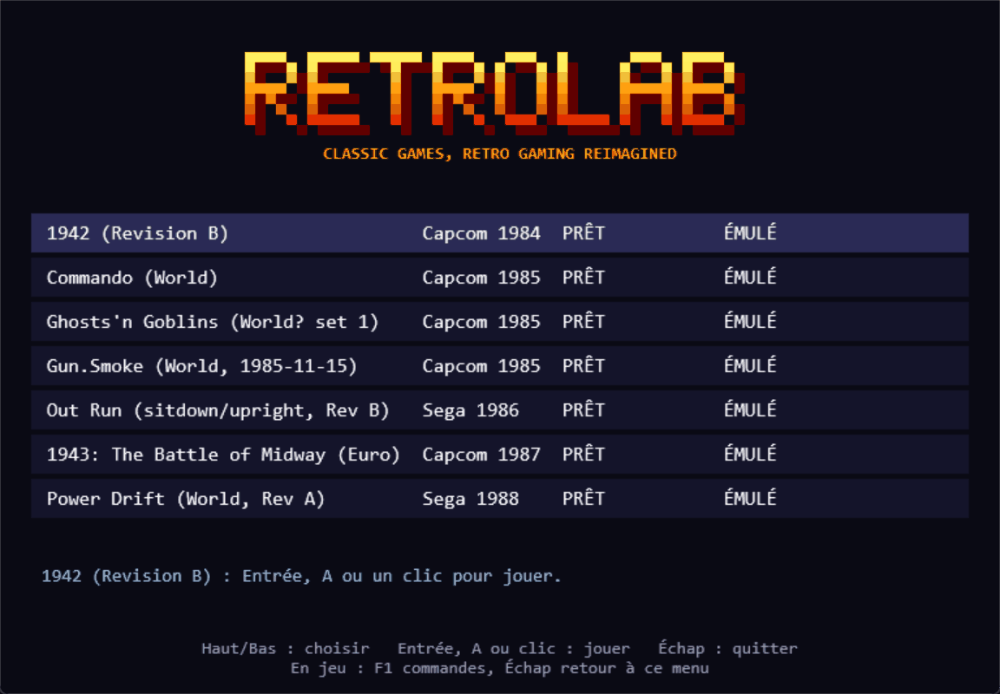
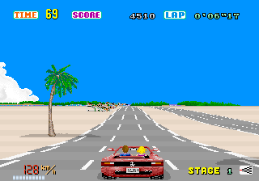
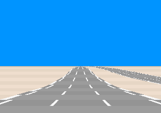
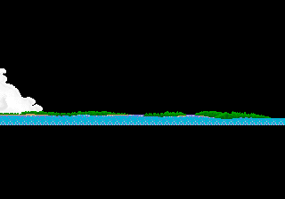
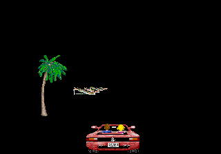
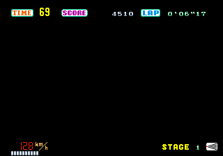

Classic Games, Retro Gaming Reimagined
Comprendre et réécrire l'émulation des bornes d'arcade des années 80, puce par puce, en Pascal objet moderne, avec un code que les humains comme les IA peuvent lire et réutiliser.
Les jeux

Manette Xbox ou toute manette XInput, ou clavier ; commandes reconfigurables avec F1. Un clic sur un jeu ouvre sa carte dans l'architecture.
L'architecture
Le code suit la vraie machine. Chaque pièce est une unité Pascal, et chaque unité ne connaît que ses voisines directes.
La borne
fenêtre, haut-parleur, manettes, menu
samples/Cabinetsrc/cabinetLa prise
entrées des joueurs, image et son, une image à la fois
Arcade.BoardLa carte
le câblage : mémoire, interruptions, vidéo
src/boardsLes puces
processeurs et son, sans dépendance
src/chipsLa cartouche
quels fichiers ROM, à quelle adresse, pour quelle carte. Générée depuis MAME, chaque fichier contrôlé par son CRC32.
src/romsets- Une carte porte le nom de son circuit imprimé (exemple :
Capcom84100). Si un fichier porte le nom d'un jeu, c'est que vous lisez une partie propre à l'implémentation de ce jeu. - Pour ajouter un jeu sur une carte déjà émulée, il suffit d'écrire son unité de cartouche.
- Pour ajouter une nouvelle carte, on écrit une unité de carte qui réutilise les puces existantes.
- La prise est la même pour toutes les cartes : la borne ne sait rien d'un Z80 ou d'un 68000.
Les cartes et leurs puces
Choisissez une carte : ses puces s'allument. Choisissez une puce : les cartes qui l'utilisent s'allument.
Cartes
Puces
La fidélité de l'image
Une image d'OutRun, telle que la borne la calcule, puis les plans qui la composent. Chaque plan sort du même code que dans le jeu, simplement affiché seul.





- L'image est construite ligne par ligne, dans l'ordre où le matériel la compose : route du fond, décor arrière, décor avant, route de devant, texte, sprites.
- Les 4096 couleurs sont calculées à partir du réseau de résistances de la carte (3,9 kΩ, 2 kΩ, 1 kΩ, 500 Ω, 250 Ω), plus la résistance de 470 Ω qui donne l'ombre et la surbrillance.
- Les valeurs de défilement sont verrouillées à la ligne 261, comme sur la carte : un changement en cours d'image ne déchire pas le décor.
La fidélité du calcul
- Z80 : les suites ZEXDOC et ZEXALL passent, 67 tests sur 67, opcodes et drapeaux non documentés compris.
- 68000 : 99,55 % des 822 000 instructions de la suite SingleStepTests donnent les mêmes registres, la même mémoire et le même nombre de cycles que la vraie puce.
- Synchronisation : les processeurs d'une carte avancent ligne d'écran par ligne d'écran, et les interruptions tombent sur les mêmes lignes que sur la carte d'origine.
- Déterminisme : à entrées identiques, l'état complet de la carte (mémoires, registres) a la même empreinte à chaque image. Une partie enregistrée se rejoue à l'identique, et chaque modification du code est vérifiée contre ces empreintes.
- Cartouches : générées depuis les définitions de MAME, chaque fichier ROM contrôlé par son CRC32. Un mauvais fichier est refusé avec son nom.
C'est un travail en cours. La suite est décrite dans la feuille de route.
Démarrer
1. Les ROMs, à fournir vous-même
Aucune ROM n'est fournie. Utilisez vos propres sets MAME, dans un dossier roms/ à la racine du dépôt.
| Jeu | Fichier | Set MAME |
|---|---|---|
| 1942 | roms/1942.zip | 1942 (Revision B) |
| Commando | roms/commando.zip | Commando (World) |
| Gun.Smoke | roms/gunsmoke.zip | Gun.Smoke (World, 1985-11-15) |
| 1943 | roms/1943.zip | 1943: The Battle of Midway (Euro) |
| Ghosts'n Goblins | roms/gng.zip | Ghosts'n Goblins (World? set 1) |
| OutRun | roms/outrun.zip | Out Run (sitdown/upright, Rev B) |
| Power Drift | roms/pdrift.zip | Power Drift (World, Rev A) |
2. Compiler
Ouvrir samples/Cabinet/Cabinet.dpr dans Delphi et compiler en Win64. Toutes les unités sont déclarées dans le .dpr, il n'y a donc rien d'autre à configurer. Le projet est développé avec Delphi 13.
3. Lancer
Cabinet.exe : un menu affiche les jeux, prêts ou avec leur ROM manquante. Cabinet.exe --set commando lance un jeu directement.
4. Régler la borne
Les interrupteurs DIP des cartes (difficulté, vies, prix d'une partie) se règlent en ligne de commande, avec une valeur hexadécimale par banque : --dip0 XX et --dip1 XX. L'option --service démarre la carte dans son mode de test.
| Jeu | Par défaut | Facile | Difficile | Très difficile |
|---|---|---|---|---|
| Power Drift | EA | --dip0 AA | --dip0 6A | --dip0 2A |
| OutRun, circulation | F9 | --dip0 B9 | --dip0 79 | --dip0 39 |
Dans OutRun, --dip0 A9 donne à la fois un temps facile et une circulation légère. Pour Power Drift, --dip0 EB transforme la borne en cabine mobile : le jeu pilote le siège, et son inclinaison passe dans les vibrations de la manette.